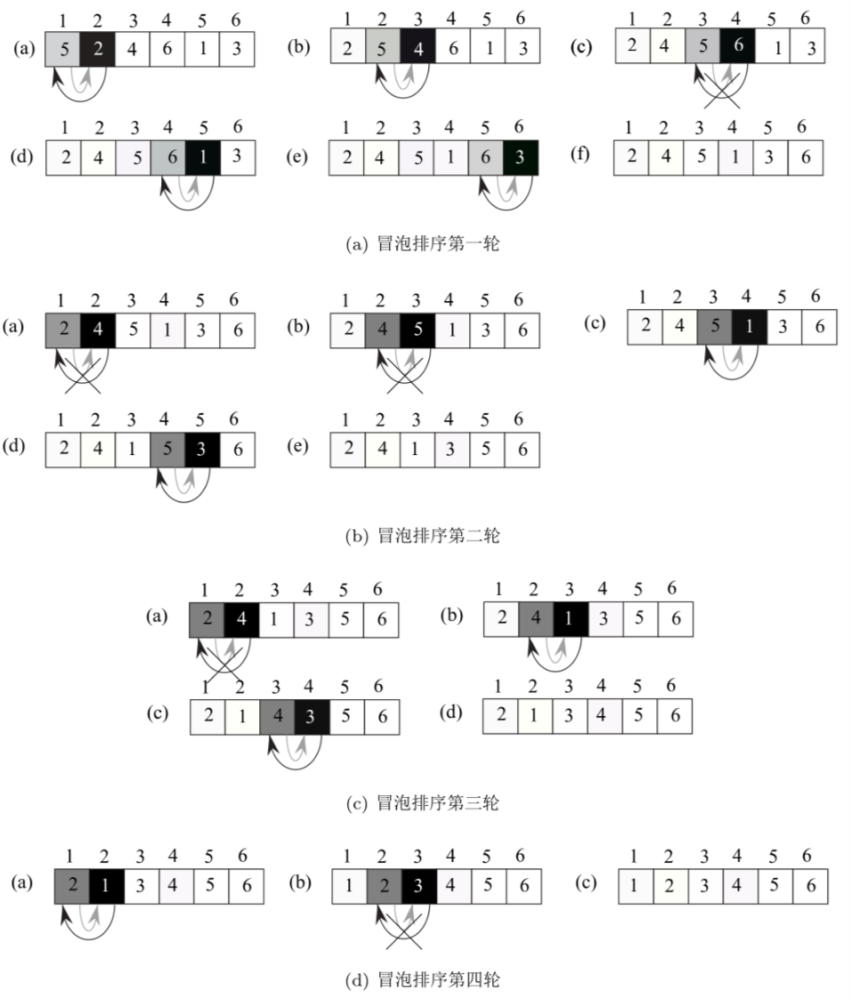
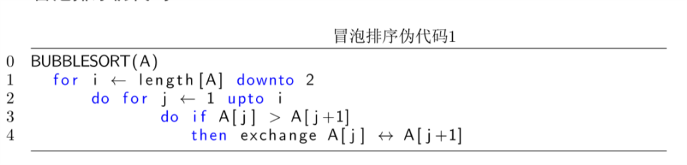
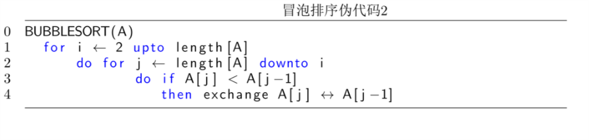
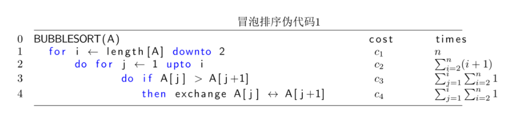

冒泡排序
1 算法描述
冒泡排序算法是一种基于交换的排序算法。该算法通过比较并交换（如果有必要的话）相邻两个元素的位置来实现排序。顾名思义，每一次循环交换都会导致相对较大的元素向上移动，就像沸腾的水一样，大的泡泡在上小的泡泡在下。实际上冒泡算法在实际应用中较少用到。只作为理论分析或者计算机算法导论教学使用。记得有一个公司的面试题目用到了冒泡算法。该题目大意为：从一楼到九楼每一楼的电梯门口都有一个钻石，要求应聘者从一楼开始坐电梯上楼，不准返回而且任何时刻他手中都只能有一颗钻石，要他到达九楼时手中的钻石最大的一颗。这个题目很简单，只要在每一楼的电梯口比较一下，如果电梯口的钻石大于手中的就交换一下，小于手中的钻石就不交换。最后到达九楼手中的钻石就自然是最大的一颗。
冒泡算法是一种比插入排序还要差劲的算法，虽然这两种算法的最差时间复杂度都是\(\mathcal{O}(N^{2})\)，但是冒泡算法需要的交换次数远远大于插入排序。并且冒泡排序大约需要两倍于插入排序的内存读写，两倍与插入排序的缓存击不中。而且冒泡算法还会产生更多的分支预测错误。
有很多基于冒泡算法的优化。
2 示例
假设输入数据是\((5,2,4,6,1,3)\)，冒泡排序的过程如图1所示：

图 1: \((5,2,4,6,1,3)\)的冒泡排序过程
可以看出在输入为 \(A=[5,2,4,1,6,3]\)的排序过程中，共需要发生的交换次数为 \(4+2+2+1\) ，需要的比较次数为\(5+4+3+2\)。其中需要交换的次数与输入数组中逆序的个数直接有关，而需要发生的比较次数则与输入规模直接有关。这在下面的算法分析中会再次提起。
3 冒泡排序伪代码

图 2: 冒泡排序伪代码1
在以上的伪代码中跑的最快的元素是最大的元素，经过第一轮的 for 循环，最大的元素就跑到了最右边，这与之前提到的那个拿最大钻石的例子是一样的，只需要一趟电梯就可以得到最大的钻石。实际上，在冒泡排序中我们可以控制到底是最大的元素跑的最快还是最小的元素跑的最快。下面给出最小元素跑的最快的伪代码。

图 3: 冒泡排序伪代码2
4 算法分析
我们用循环不变式来分析冒泡算法的正确性。
- Initialization 在冒泡法排序伪代码1的第一行，当 \(i=length[A]\) 时，第一轮循环我们可以得到最大的元素被放在了 \(A[length[A]]\) 的位置。这是没有问题的。
- Maintenance 接下来的每一次循环中，\(A[length[A]],A[length[A]-1],A[length[A]-2],\ldots\)里的元素值依次递减。这些值也是数组中除了上次循环找出的最大值之外子数组的最大值。
- Termination 最后我们验证当循环结束时排序的结果。对于伪代码1中所示的冒泡排序算法来说，当 \(i=2\)时，排序结束。此时内部的
for循环，实现了 \(A[1],A[2],A[3]\)的排序。当\(i=2\)时，内部for循环不仅找到了\(A[1],A[2],A[3]\) 中最大的元素，而且还实现了\(A[1],A[2]\)的排序。 \(i\)没有必要再置为1, 让内部的for再排一次 \(A[1],A[2]\)，因为当 \(i=2\)时，\(A[1],A[2]\)的排序已经完成了。
以上我们分析了冒泡排序算法的正确性。接下来分析冒泡排序的复杂度。假设输入规模为\(n\)，且输入的序列是逆序拍好的（最差情况）。

图 4: 冒泡排序伪代码1复杂度
5 冒泡算法c语言实现
1: void bubblesort( int A[], int n ){ 2: int i=0,j=0,exchange; 3: for( i=n;i$>$=2;i$--$ ) 4: { 5: for(j=0;j<i;j $++$) 6: { 7: if( A[ j ] $>$ A[ j+1 ]) 8: { 9: exchange = A[ j ]; 10: A[ j ] = A[ j+1 ]; 11: A[j+1 ] =exchange; 12: } 13: } 14: } 15: }